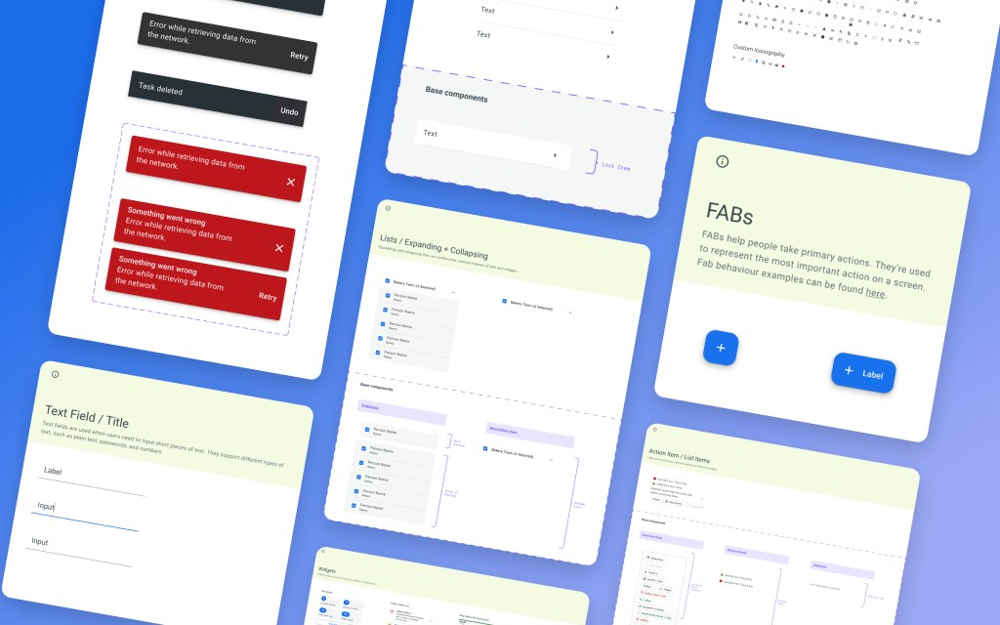
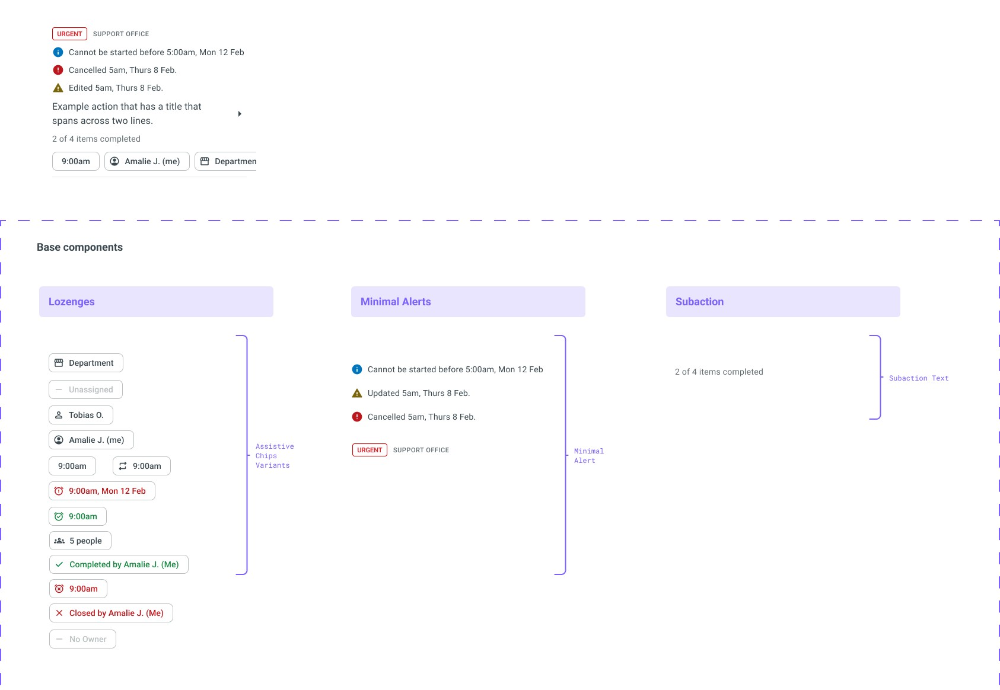

Me@Woolies: Design System

Challenge
I joined Me@Woolies on a three-month contract, with a possible extension to six months depending on how much work there was, though that wasn’t confirmed. I started on the core product, essentially the MVP. There was no design system beyond a couple of Material components another designer had helped Tobias set up, and given the scope we were briefed on, we set everything up in a single file. For three to six months of contained work, that was a reasonable call.
Then the program kept growing and my contract kept getting extended, eventually well past six months. What started as the MVP grew into Core Product, Communications, To Dos, Support & Feedback, Food Safety, Process Confidence, Bring Your Own Device and Workbenches, across two surfaces — the handheld RF devices store teams carry, and desktop workbenches for support office employees.
I could see it coming fairly early. Not long after the core product was built, my Figma file had become a mammoth and it was clear the setup was on track to hold a whole program rather than one piece of work. Around the same time, after the core product released, there was talk in the business about moving from the Woolworths grocery green to the corporate blue.
Solution
A design system built on Material 3, and a file architecture that separated the design team’s working files from a single Ready for Dev file that developers and stakeholders could both rely on.
My Design & Approach
Material 3 was a deliberate choice for two reasons. The RF devices ran much older Android builds, so Material would render predictably on hardware I couldn’t control. And Android patterns were already familiar to store team members, most of whom carried Android phones themselves — the system would feel like something they’d used before rather than something new to learn. Colour came from Woolworths’ own design system, WW Core, drawing on the palettes already in use across their in-store systems and corporate marketing site. I didn’t set the tokens up; I worked with the ones they had.
Foundations covered typography, spacing, grids and columns, and border radius, with colour inherited from WW Core rather than defined from scratch. Components were split into core, project-specific — Comms, To Do, Workbenches — and utilities, each documented rather than just drawn. The snackbar page, for example, maps the component to every action that triggers it, with the copy for each, down to the singular and plural of giving a task to one person versus several.
The components were built to be reconfigured rather than redrawn. A To Do is assembled from field-level pieces — title, description, department, attachments, who created it, who it’s assigned to — each one swappable. So the same screen could be set to in-store or support office, due tomorrow or overdue, assigned to me, to someone else or to nobody, and scoped to a Team Member, a Store Leader or a Store Manager. Every one of those combinations had its own requirements and its own rules about what that person should be able to see, and building it this way meant switching between them rather than maintaining a separate screen for each. If I built it today I’d use slots for a lot of it, but that wasn’t available then.

The file architecture mattered as much as the components. Each feature stream got its own WIP file for the design team, plus one for graphics and prototypes used in steerco meetings and tradeshows. Anything ready moved into a single Ready for Dev file, so developers and stakeholders had one place to look instead of hunting through working files. Ready for Dev sections carried their Jira ticket numbers, so a ticket led straight to the frames that answered it.
Separating the components into their own file also gave me an actual published library rather than a page of components sitting inside a delivery file. That’s what let me roll changes out properly — update a component once and push it, instead of chasing instances across every feature’s pages. The green-to-blue switch was what finally forced the split, but the library was the thing worth having.
Design Challenge
Design Challenge: Designing in Material, Building in PowerApps
The system was built on Material 3, but the app wasn’t. It was built in PowerApps, which has its own component set and doesn’t produce Material components. So the system had to work as a translation layer rather than a straight spec.
I kept PowerApps components as a working reference for what could and couldn’t actually be built, and designed against that rather than against what Material allowed in the abstract. For Support & Feedback I maintained two parallel sets of the generic components — the styled version and the same set as PowerApps would produce it — so the mapping between them was visible rather than something I had to explain each time. Where the two didn’t line up, the answer usually wasn’t to change the design. It was to sit with the developers and walk them through how to take a PowerApps component and style it to behave like the Material one.
Result
A standalone, published component library with documented foundations and a file structure that gave the design team room to work while giving developers and stakeholders a single reliable source. The system carried the program across eight feature streams and two device types.
Where it paid off most clearly was Support & Feedback. The developers were struggling to understand the decision tree behind the request forms and needed us to map it out properly — it ended up being one of the largest single pieces of work in the file. Having the form components already built meant designing it was mostly assembly rather than drawing every field from scratch. And because those were styled out-of-the-box components rather than custom ones, the tree was straightforward for the team to build and has stayed simple to maintain and update since. Custom components would have made both halves of that harder.
What I Learnt
I should have pushed for separate files from the start. I set up for the engagement I was briefed on rather than the one it might become, and even once I could see the file becoming a mammoth, the split didn’t happen until the rebrand forced the issue. Now I assume work will outgrow its setup, because it usually does.